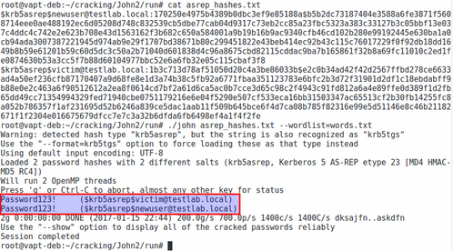

This may be easier as tools are updated to include this specific ASN.1 type!
We now have a nice set hash representations of RC4-HMAC AS-REPs, each of which are encrypted with a user’s password. We should now be able to crack these offline à la Kerberosting (krb5tgs format in John the Ripper), but remember that despite using the same algorithm and approach as the existing TGS-REP format, the message type here is 8 instead of 2.
This unfortunately means that existing plugins won’t work, but luckily for us, all we have to do is change this line to an 8 instead of a 2, remove some of the specific TGS ASN.1 speedups, and change the format naming. I have a included a tweaked version of this krb5_asrep_fmt_plug.c plugin with the ASREPRoast project. Simply drop it into the source folder for Magnumripper, run the normal build instructions, and you’d good to go for cracking the output of ASREPRoast.ps1:

I believe that it should be simple to modify Hashcat’s existing TGS-REP format as well in a similar way, but I haven’t attempted it yet. Also, because this is the same algorithm as the krb5tgs/Kerberoasting format, just with a tweak in key material, performance should be similar to the existing modules.